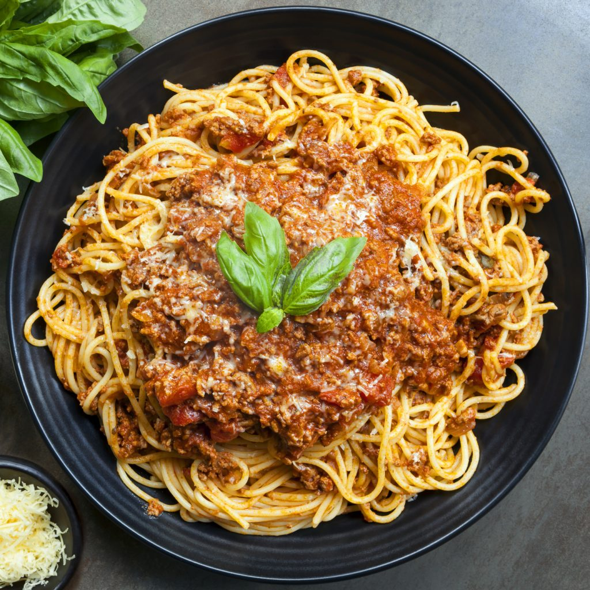

Spaghetti bolognese

ingredients
- 1/2 large yellow onion, cut into 2-inch chunks
- 1 large carrot, peeled and thickly sliced
- 1 large stalk celery, thickly sliced
- 2 tablespoons unsalted butter
- 1 pound ground beef
- 1/2 teaspoon table salt
- 1/8 teaspoon freshly ground black pepper
- 1/2 cup whole milk
- inch nutmeg
- 3/4 cup dry white wine
- 1 (28-ounce) can whole San Marzano or other good quality tomatoes with thick juice
- 12 ounces cooked pasta (for serving)
steps
- Chop the vegetables: In a food processor, combine the onion,
carrot, and celery. Pulse until finely chopped.
- Cook the vegetables:In a deep, wide skillet over medium heat, melt the butter.
Add the onions, carrots, and celery. Cook, stirring often, for 5 minutes, or until
soft and translucent but not browned.
- Cook the beef: Add the ground beef to the skillet with the sautéed vegetables.
Add the salt and pepper. Break the meat up with a fork or a potato masher and cook
over medium heat for 3 to 4 minutes, mashing it until it is crumbly and no longer pink.
You are not actually browning the meat, just cooking it until it no longer looks raw.
- Simmer the meat and milk: Add the milk to the skillet and simmer, stirring often, for about 4 minutes,
or until the milk has almost completely evaporated. Stir in the nutmeg.
- Add the wine: Add the wine to the skillet and continue to simmer for about 5 minutes, or until it has almost evaporated.
- Crush and add the tomatoes:Pour the tomatoes into a bowl and squish them with your hands to break them up so there are no large pieces.
Add them to the skillet and bring the sauce to a simmer. Turn the heat to low and simmer the sauce for 15 to 20 minutes, stirring occasionally,
until the sauce is thick. If the sauce begins to look dry, stir in 1 to 2 tablespoons hot water. Taste and add more salt and pepper if you feel
it's needed.
- Serve: Serve the sauce over a bed of cooked spaghetti.